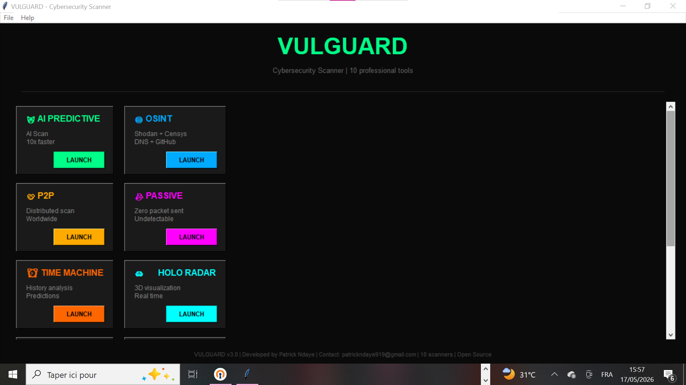
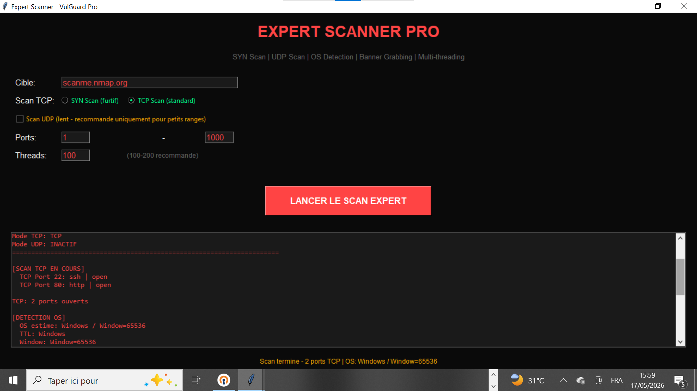

📖 Documentation SENTRAX
🎯 Installation
Téléchargez la dernière version depuis la page d'accueil.
Faites un clic droit sur le fichier ZIP → "Extraire tout".
Double-cliquez sur SENTRAX.exe.
📸 Fenêtre principale - Les 10 scanners disponibles

🔧 Utilisation
Sélectionnez l'un des 10 scanners dans le menu principal.
Saisissez une IP (ex: 192.168.1.1) ou un domaine (ex: scanme.nmap.org).
Cliquez sur "LANCER" et patientez.
Les ports ouverts s'affichent avec leurs services.
📸 Résultat de scan - Ports détectés

📊 Dashboard Web
Allez sur http://localhost:5000/dashboard
Identifiants : admin / admin123
📸 Dashboard web - Interface moderne

🔐 API REST
curl -X POST http://localhost:5000/api/quick-scan \
-H "Content-Type: application/json" \
-d '{"target":"scanme.nmap.org"}'
❓ FAQ
10 scanners : AI, OSINT, P2P, Passif, Time Machine, Holo Radar, Expert PRO, Ultra PRO, SNMP, DNS.
Oui, SENTRAX est open source (licence MIT).
Envoyez un email à patrickndaye919@gmail.com ou ouvrez une issue sur GitHub.
🛡️ Exemples de cibles autorisées
scanme.nmap.org- Serveur de test officiel (recommandé)google.com- Site public127.0.0.1- Votre propre machine